PiAudioMonitor is a suite of audio monitoring tools designed to run on a Raspberry Pi with the official Pi Touchscreen. The software will also run on other flavours of Linux and Windows.
The hardware parts that make up the unit can mostly be purchased from RS
There is an img file available which contains the OS and a preinstalled version of PAM. This is the easiest way of getting started.
On powering on the Raspberry Pi the PAM software will be automatically started.
PAM is based on a plugin infrastructure. There is a core application which deals with audio input and output and hosts plugins that display the monitoring metrics.
There are three types of plugin
The application will startup with the splash screen above whilst the plugins are loaded.
Once eveything is loaded the application will default to the display that it was on when it closed.
The screen is divided in to 4 areas.

Most plugins have the ability to go full screen, hiding the selection buttons as can be seen above with the FFT plugin. Touching the screen will switch between full screen and half screen mode.
There is one built in Screen Selection buttons.
The settings page is built in to the core application. It is can be found by choosing the Screens tab. Note: it is possible to set a PIN to protect entry to the Settings screens
It consists of a number of sub-pages which can be selected by pressing one of the Option Selection buttons:
The stop strap of the page shows the hostname of the unit and the current version number of the core application.
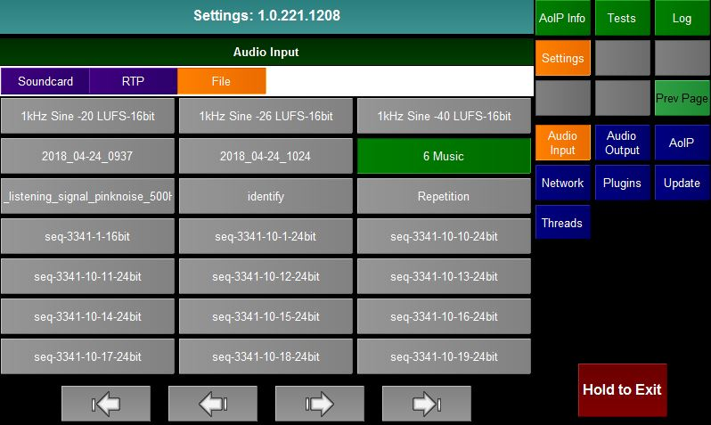
The audio input page allows the user to select what audio source he is monitoring. The page is divided in to two sections. The top list shows the input types and the list below shows all possible inputs of the selected type. The buttons at the bottom are (from left to right) Home, Previous Page, Next Page, End
There are 3 input types
Turns off the audio input
Selecting this will list all possible physical audio inputs to the raspberry pi. If you have the HifiBerry digi+ hat connected then you should select snd_rpi_hifiberry_digi:
Selecting this will list all discovered or manually entered AES67/Livewire/Ravenna sources. You can edit this list by pressing the Manage button. This will bring up the AoIP screen

From here you can manually add/edit/delete AoIP sources

Or press Discovery to bring up the mDNS/SAP discovery dialog

From here the user can choose to listen from RTSP mDNS messages and/or SAP messages. Press the Discovery toggle button to Start/Stop discovery. Any AoIP sources advertised will appear in the listbox.

The audio output page allows the user to choose what audio output device to use if any. The options are "Disabled", "Soundcard" or AoIP.
Soundcard (as shown above):
The list of available soundcard outputs is listed along with the audio buffer delay.
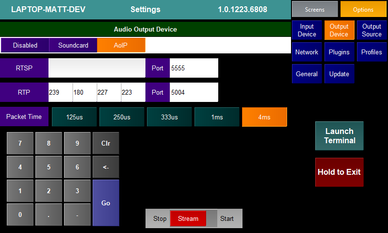
AoIP (as shown above):
From here the user can select the interface to use for the RTSP server and the multicast address to use when sending RTP packages.
The user can also select the length that each sent packet should be. Options are as in the AES67 standard.
To start/stop streaming press the Stream toggle button.
Note: If the optional NMOS module is active then these settings may be overwritten via NMOS.
Output Source

The output source page allows the user to choose the source of audio that the PAM will output. Playback must be set to "On" from the Audio Output setting page to enable this panel.
There are 5 inbuilt possible source options
Input
See screen above. The audio output is taken from the audio input to the PAM. The user can choose what audio channel is output on the Left and Right legs of the output/
File
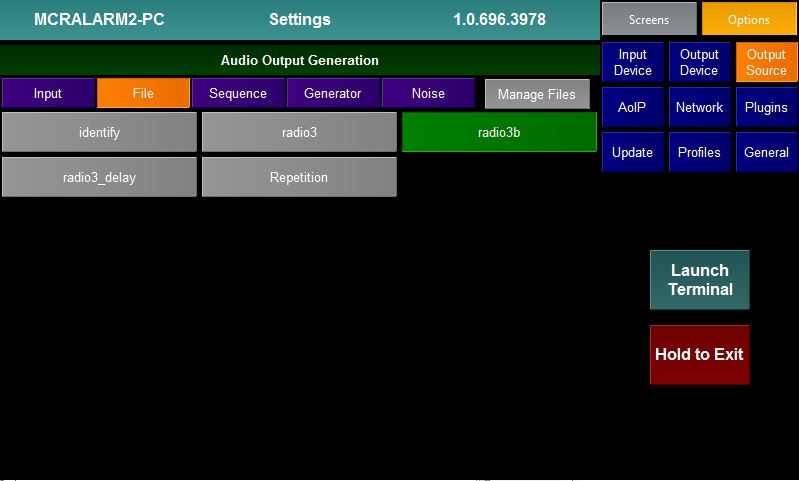
Audio is played back from a wav file. The panel lists all the wav files found on the PAM. The wav file is looped.
Sequence
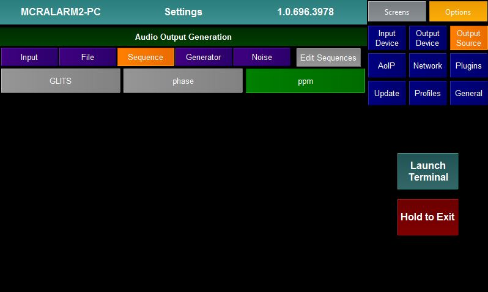
The PAM can play back a sequence of tones. These can be created/edited using the Sequence Editor.
The panel shows the sequences that have been created.
Generator

If the Generator option is selected the PAM will output a single frequency tone. The Generator panel allows the user to select the Frequency, Amplitude and shape of the wave form.
Noise
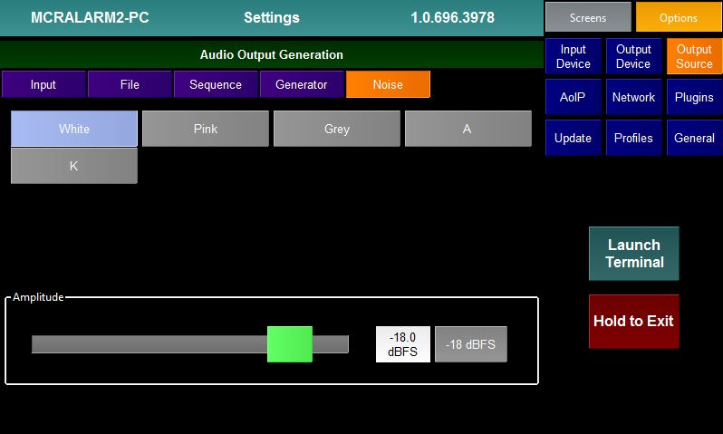
The PAM can output different colours of Noise. The user can select the noise type and amplitude.
Generator Plugins
It is possible to write plugins to act as output sources. Any loaded plugins will appear in the options list. Selecting the plugin will bring up the settings page for that plugin and use it to generate audio samples. The screenshot below shows the LTC plugin
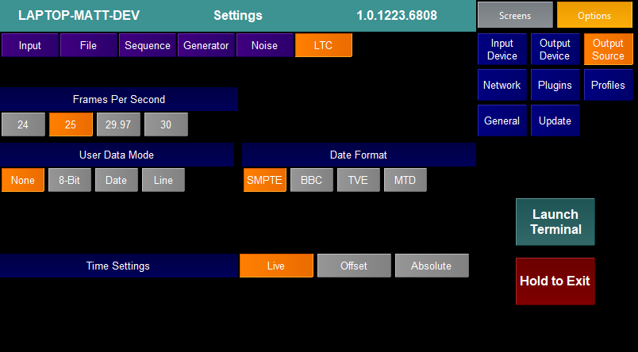
Information on generator plugins can be found on their individual pages.
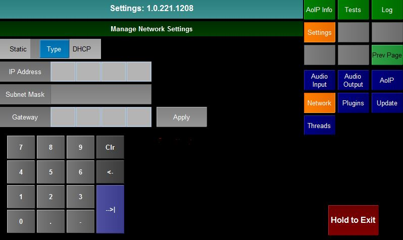
The Network page allows the user to set the properties of the wired and wifi connections of the Pi. It also shows whether each network device is connected or not.
It is also possible from this screen to bring up the WiFi manager.

The plugins page allows the user to decide which Monitor,Test and Generator plugins he wishes to have running in the application and the order that they will appear.
The list at the top of the screen decides whether the user is looking at Monitor, Test or Generator Plugins.
The left hand side of the screen lists all plugins of the relevant type that have not currently been assigned to run in the application. The section below shows the version number and a brief description of the selected plugin.
The right hand side of the screen lists all the plugins of the relevan type that are currently assigned to run in the application. They are listed in the order that they appear on the Screen Selection buttons. The section below shows the version number and a brief description of the plugin.
To Add A New Plugin
To Remove A Plugin
To Change The Position Of A Plugin
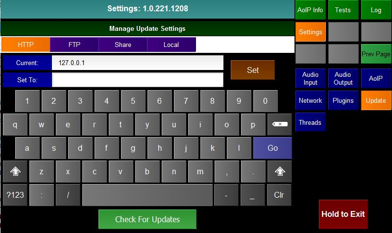
The Update screen allows the user to decide in where updates should be retrieved from. There are 4 options
Once the method of updating has been decided the user can press the Check For Updates button to launch the Update Manager.
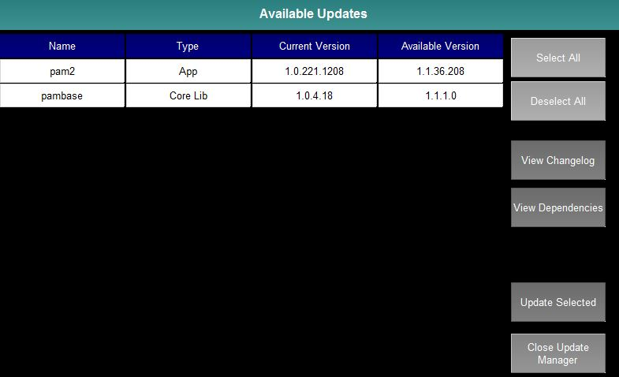
The Update Manager lists all plugins, core applications and libraries, profiles and documentation.
The user can select whether he wishes to see all the types of updates or a subsection and also whether the manager should only show updates that are newer than the installed ones.
The user can select one or more items (or use the (De)Select All buttons) and then View the Changelogs for the items, View the Dependencies for the items or simply Update the Selected items.
On pressing Update Selected all the selected items and any dependencies will be updated. Note the application must be restarted for the update to finally take effect.
Changelog
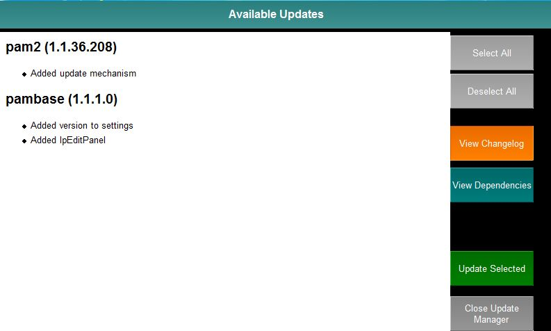
On pressing the View Changelog button the user is presented with a page that lists all the selected items and the changes that have been made to each item.
Pressing the View Changelog button will return the user to the Update Manager screen.
Dependencies
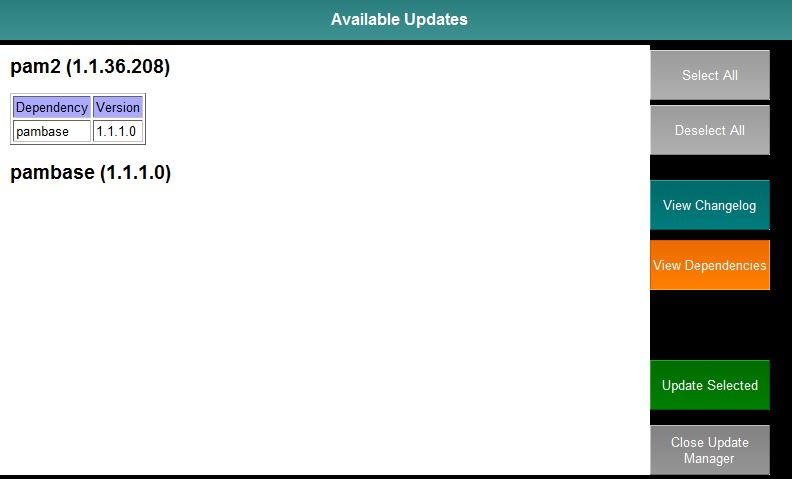
On pressing the View Dependencies button the user is presented with a page that lists all the selected items. Underneath each item is a table showing the libraries (with version number) that this item depends on. Should the user choose to update the item then the depencies will also be updated.
Pressing the View Dependencies button will return the user to the Update Manager screen.
Profiles
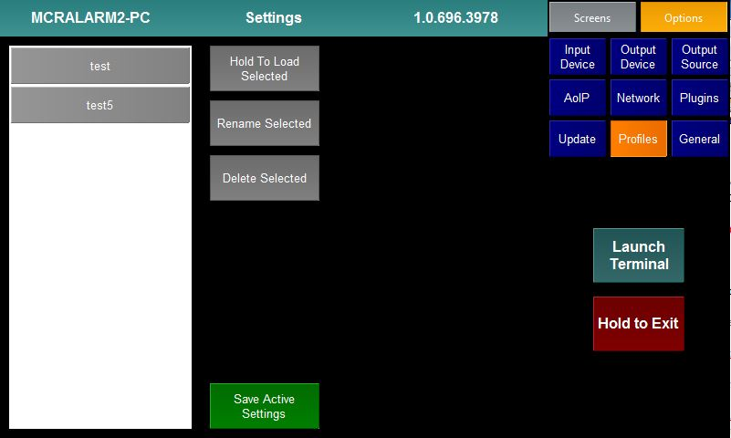
It is possible to save the state of the PAM (including all Setting values and Plugin option values) as a Profile for reloading at a later date.
The above panel lists all the saved profiles and allows the user to:
Note: Loading a profile will restart the PAM application and overwrite all the current Settngs and Options
General

The General settings page has a number of miscellaneous options:
The Help page is built in to the core application.
Pressing the Help page button will bring up the help for the currently selected plugin.
Pressing the Close button will return the user to the selected plugin.
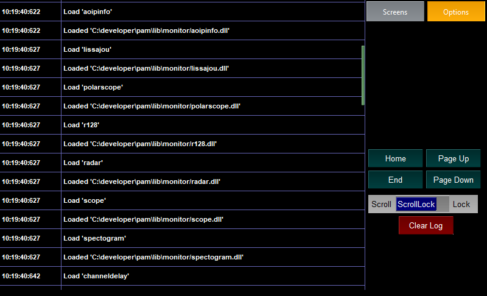
The Log page is built in to the core application.
The log page shows a detailed log of what the application has been up to since it last started. The user can use the Home, Page Up, Page Down and End
to navigate through the log. The user can also swipe on the screen to scroll the log.
If the Scroll Lock switch is set to Scroll then the log will keep refreshing. If set to Lock then the currently display page will remain.
Pressing Clear Log will clear all the log pages.
The Test page is built in to the core application. It is always the fourth to last Screen Selection button.
The page simply acts as a host page for all Test plugins. When the user selects the Test page the Option Selection buttons will list all the loaded Test plugins and the last selected one will be displayed.